100多年前，我们见证了类似的电网建设（讽刺的是，电网正是当今建设的瓶颈之一）。在电网诞生过程中，我们经历了发电厂的规模化建设（尽可能建设大型发电厂以获取性能提升）、"天文数字"般的资本支出，以及电力成本的急剧下降。
2. AI数据中心中的计算
"正如一位金融家当时所观察到的，美国新兴电力系统所需的资金数额"令人眼花缭乱"，听起来更像是天文数字，而不是实实在在辛苦赚来的美元总额。" - [描述1900年左右电网建设的文字] 《电力损耗》，Richard Hirsh 1999，摘自《建设物理学》
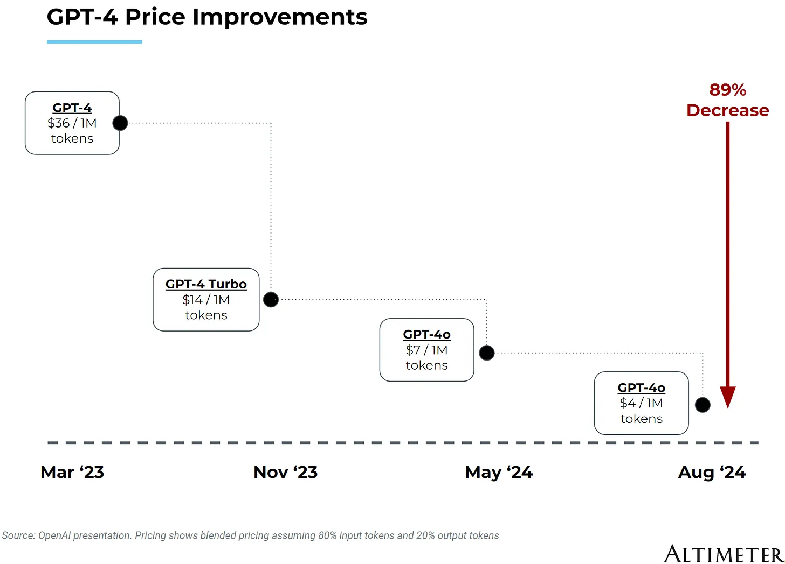
本文将专门聚焦于建设AI专用数据中心所需的基础设施；如需了解数据中心的基础入门介绍，我推荐阅读我几个月前发布的这篇文章。
"数据中心"这个词远远不足以形容这些"AI工厂"（黄仁勋亲切地这么称呼它们）的庞大规模。最大的数据中心在土地、电气与冷却设备、建设成本、GPU及其他计算基础设施上的投入高达数十亿美元。
3. AI数据中心的电力供应
这还只是能源成本之前的部分。新建的超大规模数据中心将消耗高达1GW的能源容量。作为参考，纽约市的总消耗量约为5.5GW。也就是说，每建五个这样的超大数据中心，我们就相当于给电网增加了一个纽约市的用电量。
我们可以将数据中心价值链大致分为几个类别：数据中心的前期建设开发、支持数据中心的工业设备、数据中心内的计算基础设施，以及数据中心运行所需的能源。此外，还有拥有或租赁数据中心以向消费者提供终端服务的公司。
这张图并未涵盖所有与数据中心相关的公司。还有金融家、房地产开发商、建筑公司，以及许多其他公司为这一建设贡献力量。正如Morgan Housel所说："如果有人指出我遗漏了什么，我很可能会同意。"
AI数据中心入门指南 - 作者：Eric Flaningam
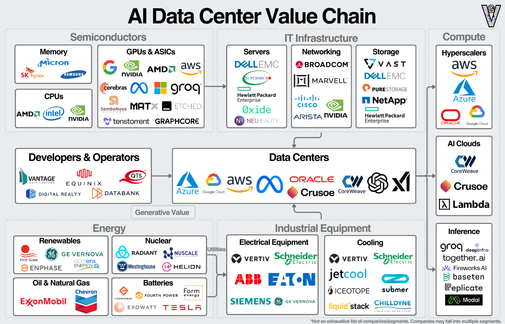
在深入探讨之前，我们应该先回顾一下数据中心的历史（这与我们今天看到的能源紧缺问题尤其相关，特别是在北弗吉尼亚地区）。
1. 扩展（或增强）电网，或绕过电网
数据中心的发展在很大程度上是伴随着计算机和互联网的兴起而演进的。我将简要讨论这些趋势的历史以及我们是如何走到今天的。
我们正处于历史上最大规模的计算基础设施建设项目之一。
今天，我们正见证数据中心的规模化建设、超大规模云服务商的"天文数字"资本支出，以及AI计算成本的急剧下降：
最早的计算形式与今天的数据中心颇为相似：一台集中式计算机，用于解决计算密集型的关键任务。
巨像计算机（Colossus）——由艾伦·图灵为破解恩尼格玛密码机而建造的计算机。（注：图灵也被誉为人工智能和计算机科学之父。他提出了图灵测试作为检验AI是否真实存在的方法，ChatGPT去年通过了这一测试）。
https://www.simslifecycle.com/blog/2022/the-journey-of-eniac-the-worlds-first-computer/
20世纪50年代，IBM凭借大型主机计算机崛起并主导了计算领域。这奠定了其在技术领域数十年的主导地位，同时AT&T也是当时另一家占据主导地位的技术公司。
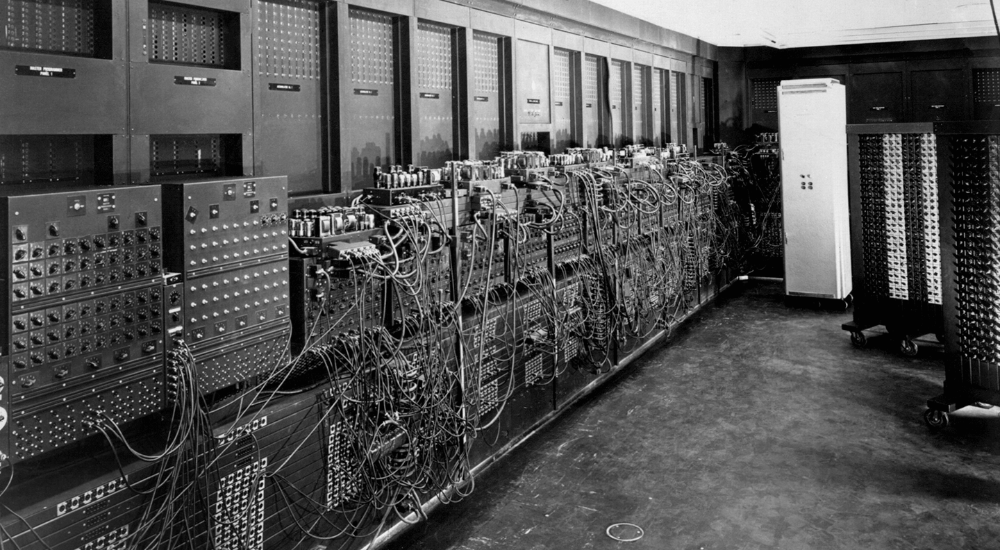
ENIAC——第二次世界大战期间由美国军方设计，但直到1946年才完成的计算机。 巨像建造时间早于ENIAC，但由于巨像的保密性质，ENIAC常被视为第一台计算机。
ARPANET于1969年发布，最初是为了连接美国日益增长的计算机数量而开发的。现在它被视为互联网的最早雏形。由于它是一个政府项目，其连接最密集的区域集中在华盛顿特区周边。
20世纪90年代，随着互联网的发展，我们需要更多的物理基础设施来处理日益增长的互联网数据。其中一部分体现为作为互连节点的数据中心。像AT&T这样的电信运营商已经建设了通信基础设施，因此这对它们来说是自然而然的扩展方向。
https://www.visualcapitalist.com/cp/top-data-center-markets/

在互联网泡沫期间，数据中心经历了大规模投资，但泡沫破裂后投资大幅放缓（在推断数据时，我们应该牢记这一教训）。
数据中心的低迷期在2006年随着亚马逊云服务（AWS）的发布开始逆转。此后，美国的数据中心容量基本持续增长。
https://www.datacenterknowledge.com/data-center-construction/catching-up-with-data-center-construction-constraints
然而，这些电信公司与今天的垂直整合云服务商面临着类似的竞合关系。AT&T既拥有通过其基础设施传输的数据，也拥有基础设施本身。因此，在容量有限的情况下，AT&T会优先处理自己的数据。企业对这种关系心存顾虑，这促使了Digital Realty和Equinix等数据中心公司的崛起。
这正是北弗吉尼亚州在计算领域占据主导地位的根源。随着每一代新数据中心的建设，人们都希望利用已有的基础设施。而这些基础设施恰好就在北弗吉尼亚地区，直至今日依然如此！
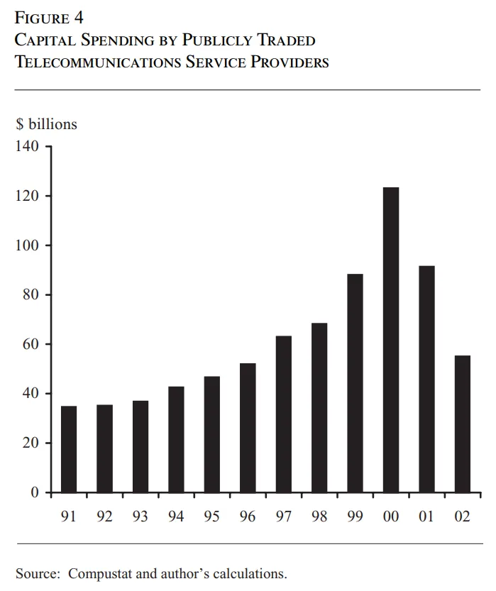
AI训练独特的工作负载使人们重新关注数据中心的规模。计算基础设施之间的距离越近，性能就越高。此外，当数据中心被设计为计算单元而不仅仅是服务器机房时，公司可以获得额外的集成优势。
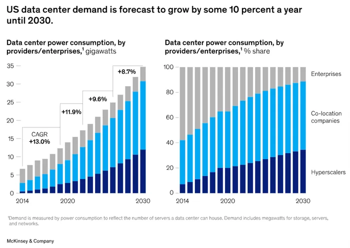
这种稳定增长一直持续到2023年，AI狂潮席卷而来。目前估计显示，到2030年数据中心容量将翻一番（请注意，这些只是估算值）。
两者都被安置在可称为"首批数据中心"的场所中。
总结今天的AI数据中心：它们专注于规模、性能、成本，并且可以在任何地方建设。
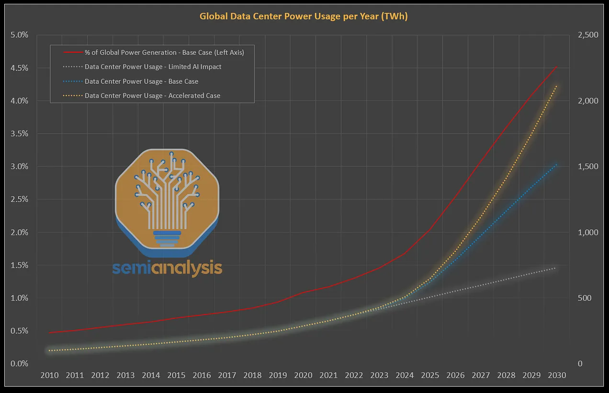
计算提供商（超大规模云服务商、AI公司、GPU云）要么自行建设数据中心，要么与Vantage、QTS或Equinix等数据中心开发商合作，寻找一块具备能源容量的土地。
https://blog.rsisecurity.com/how-to-build-and-maintain-proper-data-center-security/
数据中心的工业设备大致可分为电气设备和冷却设备。电气设备从连接到外部能源的主开关柜开始，然后连接到配电单元、不间断电源（UPS）以及连接到服务器机架的线缆。大多数数据中心还会配备柴油发电机作为停电时的备用电源。
2. 施工许可与液冷
最后，由于训练不需要靠近终端用户，数据中心可以建在任何地方。
然后，他们会聘请总承包商来管理施工过程，总承包商会为每个功能（电气、管道、暖通空调）聘请分包商并采购原材料。工人们会在项目建设期间搬迁到该地区。在建筑"外壳"搭建完成后，下一步就是安装设备。
虽然不如过去那么重要，但CPU在完成复杂操作和"委派"任务方面仍然扮演着重要角色。存储将数据保存在芯片之外，而内存则存储需要经常访问的数据。网络则将所有组件连接起来，既包括服务器内部，也包括服务器外部。
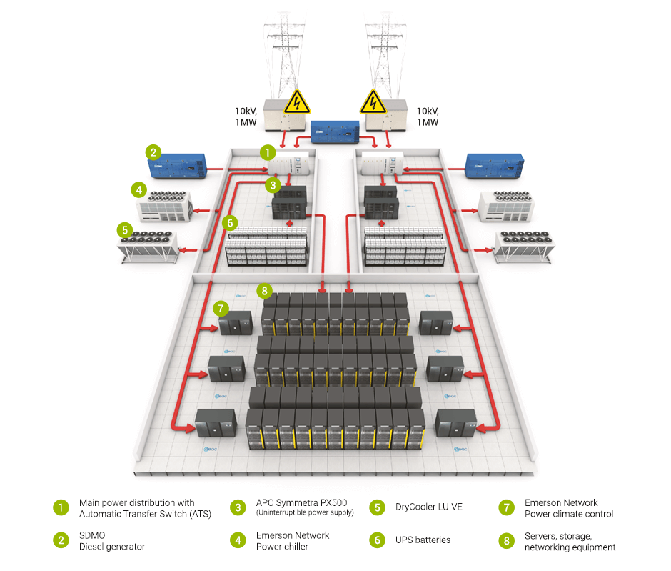
计算基础设施包括运行AI训练和推理工作负载的设备。主要设备是GPU或加速器。除英伟达、AMD和超大规模云服务商外，还有大量初创公司竞相争夺AI加速器市场的一份份额：
最后，所有这些都被封装在一台服务器中，以便安装在数据中心内。我们可以在下图中看到其中一台服务器的可视化展示（注意：存储将是外部的）。
第二类是机械和冷却设备。这包括冷水机组、冷却塔、暖通空调设备，以及连接到服务器本身的液体或空气冷却系统。
3. 向计算公司致敬
发电——发电厂将化石燃料转化为电能；对于可再生能源，发电过程更接近能源来源本身。
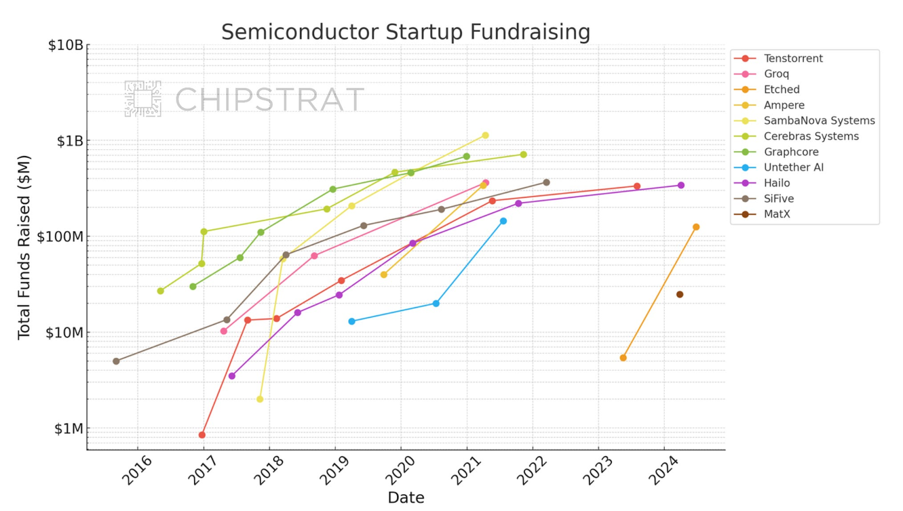
输电——电力通过高压线路传输到靠近目的地的地方。变压器和变电站将高压电降压至适合消费的水平。
输电和配电通常被称为"电网"，由当地机构管理。根据地理位置的不同，其中任何一个环节都可能成为能源输送的瓶颈。
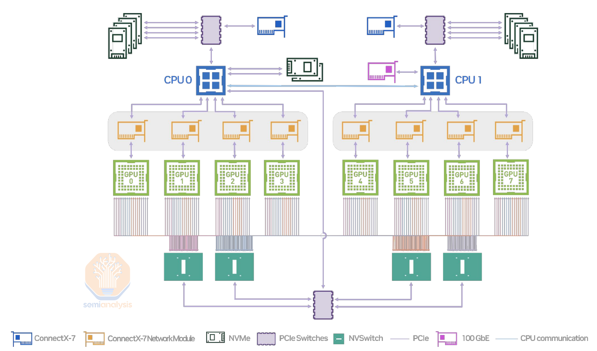
4. 总结
公用事业/配电——公用事业公司负责最后一公里的配电，并通过购电协议管理电力的输送。
电网供电的问题在于扩大电网容量所需的时间；下图显示了从申请到商业运营的输电等待时间。（这指的是从能源来源申请输电容量到实际投入使用的时间）。
不幸的是，没有快速增加能源容量的简单方法。数据中心有两种选择：电网供电和离网供电。电网供电通过电网传输，由公用事业公司分配。离网供电绕过电网，例如现场太阳能、风能和电池。 或者更优方案：将GW级的数据中心建在2.5GW核电站旁边！
解决这些挑战必然需要多种方案的结合。更多内容将在最后一节讨论。
能源来源——化石燃料、可再生能源和核能，可以产生电力。
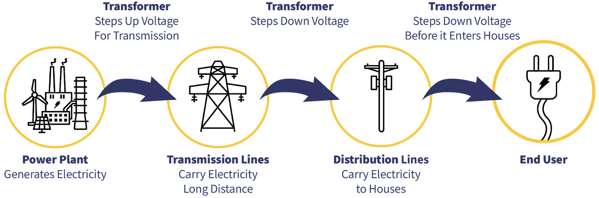
数据中心的"超大化"并非新鲜事。每隔几年就会有关于数据中心超大化的文章，从2001年的几兆瓦，到2010年代的50兆瓦，再到2020年"庞大的120兆瓦"数据中心，直至今天的吉瓦级数据中心。
在实践中，这意味着数据中心正被设计为集成系统，而非装满独立服务器的房间。这些服务器本身也被设计为集成系统，将所有组件更紧密地结合在一起。
这些吉瓦级数据中心也更为密集，采用系统视角进行设计。这里要解决的核心问题是摩尔定律的放缓——即随着晶体管密度的增加，半导体性能将持续提升这一规律。然而，晶体管的改进正变得越来越具有挑战性。因此，解决方案是将服务器、甚至整个数据中心更紧密地集成在一起。
这就是英伟达销售服务器和POD的原因，也是超大规模云服务商正在构建系统级数据中心的原因，同样也是AMD收购ZT Systems的可能原因。
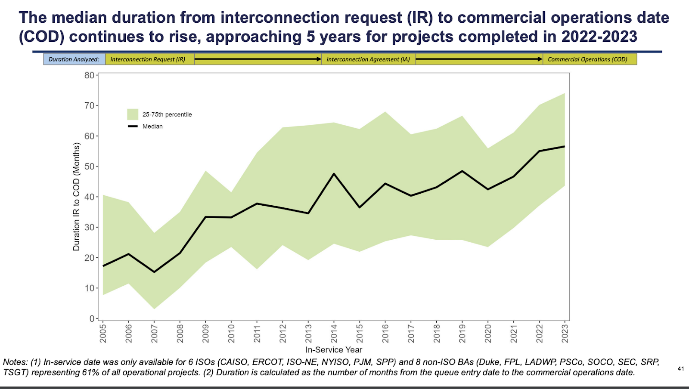
https://emp.lbl.gov/queues
除此之外，AI的独特需求需要处理海量数据。这使得存储日益庞大的数据量（内存/存储）以及快速移动日益庞大的数据量（网络）变得更加重要。这类似于心脏泵血，GPU如同心脏，数据如同血液（这就是为什么谷歌TPU的架构被称为脉动阵列）。
4. What’s new about AI Data Centers?
所有这些趋势汇聚在一起，形成了地球上最强大的计算机。这种计算能力带来了更高的能耗、更多的热量产生以及每个服务器所需的更多冷却。随着我们对计算能力的渴望不断增长，能源消耗也在不断增加：
https://www.goldmansachs.com/pdfs/insights/pages/generational-growth-ai-data-centers-and-the-coming-us-power-surge/report.pdf
这不是一份详尽的受益者名单，但这是我目前最感兴趣的名单。整个供应链都处于紧张状态，我听到过各种瓶颈问题的传闻，从缺乏熟练工人来建造变压器到许可审批自动化。
很明显，我们的能源基础设施需要发展以支持这一建设。几乎每家科技公司都更倾向于使用电网供电：这更可靠，管理起来也更省力。不幸的是，当无法获得电网供电时，超大规模云服务商会自行采取行动。例如，AWS正在投资110亿美元在印第安纳州建设一个数据中心园区，并建设四个太阳能发电场和一个风力发电场为其供电（600兆瓦）。
核能的优点已有充分记录：清洁、可靠的能源。挑战在于如何以经济可行的方式建设核设施。在我看来，一些世界上最令人兴奋的初创公司正在应对这一挑战。
长时电池创新将是可再生能源向前迈出的重要一步。太阳能和风能的问题在于它们具有间歇性——只有刮风或有阳光时才能提供能源。长时电池通过存储能源过剩时的能量并在能源短缺时释放来帮助解决这个问题。

下图展示了英伟达DGX H100的外观，它可以作为独立服务器运行，也可以在POD中与其他GPU连接，或者通过SuperPOD进行更多连接：
对于数据中心和能源扩建，开发商需要获得建筑、环保、分区、噪音等方面的许可。他们可能需要获得地方、州和国家机构的批准。此外还需要应对因地区而异的优先购买权法律。对于能源基础设施来说，这更加令人头疼。像PermitFlow这样的许可审批软件公司处于有利位置，可以帮助缓解这些难题。
很难不承认（1）英伟达在构建其生态系统方面所做的令人难以置信的工作，以及（2）AMD在巩固自身作为真正替代选择方面所做的努力。英伟达在AI领域的定位从应用到软件基础设施，再到云、系统和芯片，都令人叹为观止。如果编写一份应对技术浪潮的完美剧本，英伟达已经完美演绎了。

新型AI数据中心的一个明显区别是服务器产生的热量不断增加。新一代数据中心将采用液冷方式，而下一代数据中心可能会采用浸没式冷却。
5. Bottlenecks & Beneficiaries
我对数据中心建设的最后思考是：虽然这看起来像是一个新趋势，但它是计算发展的更宏大历史的一部分。我认为AI、数据中心和计算不应该是彼此独立的讨论话题。
1. Expanding (or Enhancing) the Electric Grid or Getting Around It
最后，随着收入流经价值链，涉足数据中心建设的计算公司应继续表现良好。从网络到存储再到服务器，如果一家公司提供顶级性能，它们就会发展得很好。
"看待人类历史的一种狭窄方式是：经过数千年的科学发现和技术进步的累积，我们学会了如何融化沙子，加入一些杂质，以惊人的精度在极小的尺度上排列成计算机芯片，让电能通过它们，最终创造出能够生成越来越强大的人工智能的系统。"
艾伦·图灵是现代计算机、计算机科学和AI之父，这绝非巧合。过去100年来，创造智能一直是持续不变的趋势。而数据中心正是当今这一趋势的核心。
免责声明：本文所含信息不构成投资建议，也不应作为投资建议使用。在投资本文讨论的任何证券之前，投资者应进行自己的尽职调查。尽管我力求准确，但我不能保证本文信息的准确性或可靠性。本文基于我的个人观点，应作为观点而非事实参考。在本网站及其他链接内容或发布到社交媒体及其他平台上的观点均为我个人观点，不代表Felicis Ventures Management Company, LLC的观点。
2. Construction Permitting & Liquid Cooling
在工业方面，我关注的两个趋势是许可审批自动化和液冷。当我与为本文进行研究的人交谈时，一个话题反复被提及为建设瓶颈：许可审批。
最近参观了圣克拉拉的几个数据中心，亲眼目睹了DGX H100的POD机群运行，并且正在建设更多机架以容纳更大的Super-POD，很明显我们仍处于AI数据中心增长轨迹的早期阶段，未来还有更多发展。南湾地区最大的瓶颈是电力暂停令。这些能源挑战在文章中已有提及： https://www.datacenterfrontier.com/energy/article/55089067/silicon-valley-utilities-gird-for-surging-us-energy-demand-fed-by-new-data-centers
从中长期来看，我对解决能源瓶颈的两个领域最为乐观：核能和电池。两者都能为数据中心提供更可持续的能源。
3. An Obligatory Hat Tip to the Computing Companies
Jeffrey Cross 2024年10月16日 Eric Flaningam点赞
Crusoe是另一家在AI计算和能源服务方面都处于有利地位的公司。
很好的概述——遗漏了许多在总承包项目启动前进行设施和基础设施设计的公司。但总体而言信息量很丰富！
4. Final Thoughts
Victor Chang 2024年10月14日 Eric Flaningam点赞
正如Sam Altman所描述的：
Eric Flaningam回复1条
一如既往，感谢阅读！
关于本文的讨论
回复